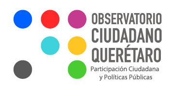
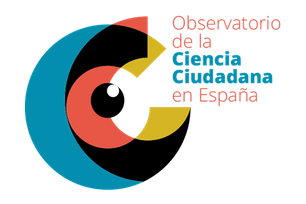

Apéndice D — Brief del isotipo del observatorio
D.1 Instrucciones para el diseñador
Representar un Observatorio Ciudadano en Bajos de Haina que articule a ciudadanos, organizaciones, instituciones y gobierno para generar datos, análisis y decisiones colaborativas sobre ordenamiento territorial, gestión de riesgos y participación ciudadana.
D.2 Sensaciones y atributos clave
- Accesible. Claro y entendible para todo público.
- Dinámico. Refleja movimiento, interacción y evolución.
- Institucional con apertura. Seriedad, confianza y profesionalismo, sin rigidez, invita a la participación.
- Memorable. Fácil de reconocer visualmente, incluso en formatos pequeños.
D.3 Elementos visuales sugeridos
Se pueden combinar o reinterpretar creativamente, siempre alineados a la idea de participación, tecnología y territorio:
- Territorio. Contornos de mapas, cuadrículas, fragmentos geográficos.
- Visores y ojos abstractos. Para representar observación y monitoreo.
- Coordenadas geográficas. Líneas, puntos de latitud y longitud, cruces de coordenadas.
- Personas abstractas o figurativas. Comunidad y participación.
- Bocadillos de diálogo. Intercambio de ideas y cocreación.
- Mapas y dashboards. Iconografía relacionada con datos georreferenciados.
- Votaciones. Urnas, checkmarks, botones de votación digital.
- Conexión entre dispositivos. Redes, nodos, iconos de tecnología conectada.
- Flujo de datos. Líneas, puntos y movimientos que muestren la circulación de información.
- Interconexión de datos. Redes neuronales, esquemas de nodos interrelacionados.
D.4 Colores sugeridos
- Verde y azul. Territorio, medioambiente y tecnología.
- Naranja o amarillo. Dinamismo, innovación y acción.
- Grises o neutros. Balance institucional.
D.5 Tipografía
- Limpia y moderna, sin ser excesivamente técnica.
- Debe leerse bien en digital, en impresiones y a diferentes tamaños.
D.6 Formato esperado
- Isotipo.
- Logotipo.
- Combinación de ambos.
- Adaptable a fondo claro y oscuro.
- Escalable sin perder legibilidad, desde un favicon hasta un banner.
D.7 Inspiración y moodboard sugerido
D.7.1 Referencias de observatorios existentes

